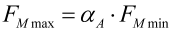
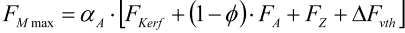
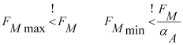

|
|
|


螺栓
KISSsoft 根据 VDI 2230（2015）计算螺栓连接。除了提供标准值表之外，该程序还提供一系列选项，使您能够为大多数约束值（如几何数据和材料数据）输入自己的定义。尽管 VDI 2230 标准没有迭代功能（即可以手动计算），但灵活的输入和修改选项为您提供了便捷的软件解决方案。但是，您必须熟悉 VDI 2230，才能正确解释结果并在程序中正确输入所需值。
VDI 2230 将装配预紧力（FM/FMzul）与最小和最大所需装配预紧力（FMmax 和 FMmin）进行比较。FMzul 基于螺栓的允许载荷。FMmax 和 FMmin 描述了确保连接正常工作的最小必要预紧力。
最小必要安装预紧力 FMmin 由工作载荷 FA、零件和螺栓的柔度、嵌入损失 FZ、热力 Fvth 以及所需夹紧载荷 FKerf 计算得出。FMmax 可在考虑拧紧技术离散度（拧紧系数 αA）的情况下由 FMmin 计算得出。
|  | (42.1) |
|  | (42.2) |
最大所需安装预紧力 FMmax 必须小于螺栓的允许预紧力 FMzul。与此比较类似的是，最小所需安装预紧力 FMmin 与通过拧紧获得的最小预紧力 FM/αA 之间的比较：
|  | (42.3) |
Bolts
KISSsoft calculates bolted joints according to VDI 2230 (2015). In addition to providing tables with standard values, the program also has a range of options that enable you to enter your own definitions for most of the constraint values (such as geometry and material data). Although the VDI 2230 standard does not have iteration functionality, i.e. it can be calculated manually, the flexible input and modification options give you a user-friendly software solution at your fingertips. However, you must be familiar with VDI 2230 before you can interpret the results and enter the required values correctly in the program.
VDI 2230 compares the assembly pretension force (FM/FMzul) with the minimum and maximum required assembly pretension force (FMmax and FMmin). FMzul is based on the permitted load on the bolt. FMmax and FMmin describe the minimum necessary pretension forces that ensure the connection will function correctly.
The minimum necessary mounting pretension force, FMmin, is calculated from the operating force FA and the resilience of the parts and the bolt, the embedding loss FZ, the thermal forces Fvth and the required clamp load FKerf. FMmax can be calculated while taking into consideration the scatter of the tightening technique (tightening factor αA) from FMmin.
| (42.1) | |
| (42.2) |
The maximum required mounting pretension force FMmax must be less than the permitted pretension of the bolt FMzul. A similar comparison to this comparison is the one between the minimum required mounting pretension force FMmin and the minimum pretension force achieved by tightening FM/αA:
| (42.3) |